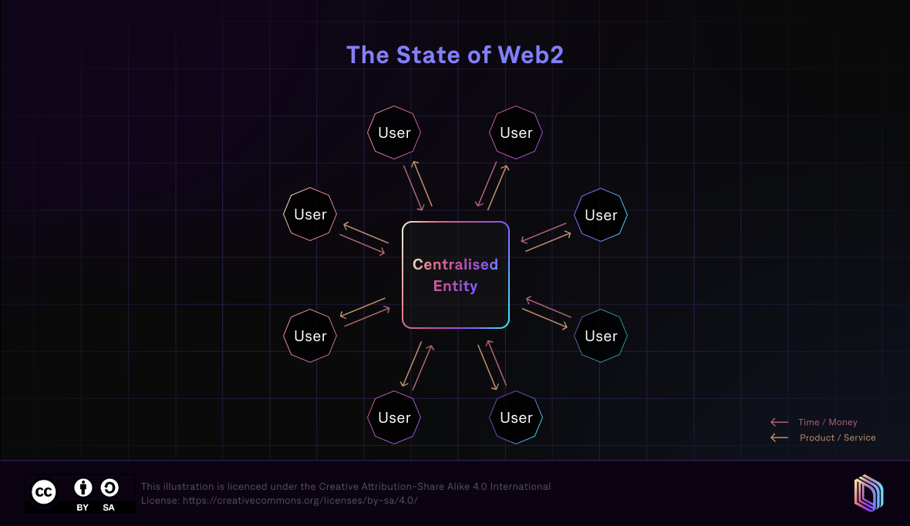

Уеб2 ние дава невероятно свързан свят, но тази свързаност идва на висока цена - централизиран контрол на дигиталния свят. Платформи като Фейсбук и Ютюб доминират начина по който съдържание се създава, споделя, и монетизира - на практика е митничар между публиката и създателите на съдържание. Всеки пост, видео или дигитален актив е съхраняван върху сървърите на компании, и представлява субект на правилата, алгоритмите и политиките на платформата. Това означава че дори най-известните създатели на съдържание разчитат на благосклонността на често бледите системи за модерация, политики за демонетизация или дори най-просто внезапни промени в платформата, които затриват тяхната достижимост или още по-зле, да затрият изцяло техните трудове. Централизираните платформи имат силата на скалата и леснотатата на позлване, но също така те концентрират силата и контрола в ръцете на няколко корпоративни единици, оставяйки потребителите на практика с много малко свобода над собствения си дигитален отпечатък.
Едно от най плашещите последствие от тази централизация е липсата на истинска собственост. Когато някой създаде вид съдържание, купи виртуален артикул, или акумулира репотация в Web2 платформа, на практика платформата притежава този актив. Потребителите може да имат право на достъп и ползване, но те не държат собствеността. Това ограничение е доста видно в гейминг индустрията или съдържанието базирано на абонамент, където всичкия прогрес, покупки и др. остават заключени в една екосистема. Ако компания прекрати услуга или промени условията си, потребителите често просто губят достъп до всичко което са създали или закупили.
Платфоррми като Фейсбук и Ютюб са добър пример за модела. Фейсбук съхранява огромни количества от лични данни, снимки и интеракции, контролирайки колко и кога биват споделени. Ютюб хоства милиони часове видеа, и създателите имат минимален контрол върху разпределенитео диктувано от алгоритъма, монетизацията и понякога дори премахването на тяхното съдържание. Дори популярни създатели на съдържание могат без обяснение да срещнат внезапна демонетизация, илюстрирайки колко централизираните системи приоритизират корпоративните си политики пред индивидуалната собственост. Структурата предоставя удобство, но фундаментално не дава автономия на потребителите като дигитални участници.
Това същност дава сцена на Web3. Чрез подчертаване на проблемите, породени от централизирания контрол, ние можем по-добре да разберем защо поемането по посока децентрализация, където потребителите могат да имат истинска собственост над съдържанието си и контрол над активите си, има значение. Трудностите на Web2 не са просто технически, те са дълбоко свързани с доверието, стойността и честността на дигиталните пространства, именно това което блокчейн базираните решения се опитват да адресират.
Web3 дава сила на потребителите като осигурява механизми с които стойността и достъпа не са медиирани от единствена компания. Чрез блокчейн технология, собствеността е директно свързана с криптографски ключове за разлика от потребителски профили в дадена платформа. Това означава че създателите на съдържание могат да задържат правата си над тяхната работа, да я продават на дигитални пазари, или дори да въведат автоматично хонуруване при следващи трансакции. Опции които са често невъзможни в Web2 света стават напълно реалистични чрез Web3. Собствеността става преносима, човек може да премества активи между приложения, да участва в множество общности или да доказва автентичност без да има нужда от валидация и позволение от централна орган.
Нови възможности се пораждат от това движение. Дигиталните пазари вече позволяват на създателите на съдържание да продават уникални артикули, като NFT-та, директно на купувачи, избягвайки "митничари" и трети страни. NFT например трансформира дигитално изкуство, музика и др като активи, чийто произход и рядкост са недвусмислени. Извън изкуството, системата зарежда богати на съдържание икономики, където независими създатели могат да монетизират работата си, да си съдействат на международно ниво и най-вече да запаззят контрол над собствеността си. Това отключва цяло екосистема от икономически и социални интеракции, преди невъзможни поради централизиращите органи.
Когато говорим за разликите между Web2 и Web3, един от най видимите контрасти лежи в това къде стои контролът и кои са основните органи. Web2 оперира на централизирани сървъри, което означава че не потребителите, а компаниите притежават и менажират цялата инфраструктура, всички данни и правилата в платформата. Всичко от това кой вижда съдържанието до това как трансакциите се обработват е под контрола на самата платформа. На практика, това означава че ако компания като Ютюб или Фейсбук реши да изтрие нечие съдържание, да ограничи достъпа или да промени условията на ползване, потребителите нямат сила да променят това. Силата на мрежата е концентрирана в ръцете на просто няколко лица.
Web3 обръща този модел, като използва децентрализирани мрежи базирани на блокчейн. Вместо единен орган, контролиращ всичко, мрежата е колективно управлявана от всички участници, и правилата които всички спазват се изпълняват чрез код вместо чрез корпоративни политики. Потребителите взаимодействат със системата чрез дигитални портфейли които съхраняват частни ключове, давайки им криптогравско доказателство за тяхната собственост над дигитални активи, без значение какви са те. Трансакциите не биват одобрявани или цензурирани от коя да е компания, те просто биват верифицирани и съхранявани от самата мрежа и алгоритъм, правейки ги прозрачни, удобни за проверка, и неподменяеми.
Блокчейн е гръбнака на Web3, и всичко си идва на мястото, веднъж човек разбере ли как работи той. В основата си, блокчейнът е разпределен списък, верига от блокове данни съхранявани в мноество компютри, вместо в един централизиран сървър. Всеки блок съдържа съвкупност от трансакции или записи, наред с криптографски хеш, свързващ го с предходния блок. Тази структура поддържа много добър интегритет, тъй като промяната на един блок потенциално би изискало рекалкулация на всички последващи блокове във всяко копие инстанциирано в мрежата, което е невъзможно от практическа гледна точка. Накратко, блокчейна обръща доверието към централен орган в прозрачна, неограничена система за верификация.
Консенсус механизмите са всъшност това което позволява на децентрализираната мрежа да се съгласява на това кои данни са валидни за вписване във веригата. В POW механизма, копачки решават сложни математически пъзели за да валидират трансакции и да добавят нови и нови блокове, като биват наградени за своите изчислителни усилия. Отдруга страна, при POS механизма, се разчита на валидатори които залагат своите средства (токени) за да валидират блокове, като това е добра алтернатива тъй като спестява значително количество електрическа енергия.
Digital ownership in Web3 is anchored by three intertwined mechanisms: wallets, tokens, and smart contracts. Wallets act as the gateway to this new ecosystem. They don't hold the assets themselves, but instead store private keys—cryptographic credentials that prove ownership of digital items or cryptocurrencies on the blockchain. Without a wallet, you can't access or control your assets, which shifts the balance of power from centralized platforms to the individual user. Think of a wallet as your personal, unhackable ID for everything you own online.
Tokens are the actual representation of digital value and can be either fungible or non-fungible. Fungible tokens, like Bitcoin or Ethereum, are interchangeable units of currency, making them ideal for transactions. Non-fungible tokens (NFTs), on the other hand, are unique, indivisible digital items that can represent art, collectibles, or in-game assets. NFTs allow creators to encode scarcity and uniqueness directly into their digital creations, giving buyers verifiable proof of ownership and provenance that was nearly impossible in Web2.
Smart contracts are the invisible rules that make ownership actionable. These are self-executing programs stored on the blockchain, automatically carrying out terms of a transaction when conditions are met. They can handle payments, transfer ownership, or enforce royalties without intermediaries. For example, a smart contract can ensure that an NFT automatically sends a portion of its resale value back to the original creator each time it's sold. This creates a seamless, trustless environment where ownership and its associated rights are enforced by code rather than centralized authorities.
Together, wallets, tokens, and smart contracts form a robust framework for digital ownership. They make it possible not only to hold and transfer assets securely but also to embed rules, scarcity, and identity directly into digital objects. This mechanism fundamentally shifts how value and creativity are recognized online, giving individuals real control over their digital lives in ways Web2 could never offer.
In Web3, every transaction follows a clear, verifiable path that ensures ownership and trust without relying on a central authority. It starts with a user's wallet, which holds the private keys that uniquely prove their control over digital assets. When a user wants to interact with a decentralized application, or dApp, such as buying an NFT, lending crypto, or participating in a game, the wallet communicates with the dApp to initiate the transaction. This step ensures that only the rightful owner can authorize actions with their assets.
Once the dApp receives the user's instruction, it triggers a smart contract, which is a pre-programmed set of rules encoded on the blockchain. The smart contract automatically verifies conditions—such as whether the user has sufficient funds or whether an NFT is available—and executes the transaction accordingly. This automation removes the need for intermediaries, and the contract executes exactly as written, making transactions predictable and tamper-resistant.
After execution, the transaction is sent to the blockchain network for validation. Nodes across the network check the transaction against the consensus rules to ensure authenticity and prevent double-spending. Once approved, the transaction is permanently recorded in a new block, linking it to the chain in a tamper-proof, transparent ledger. This process guarantees that ownership updates are irreversible and publicly verifiable, so anyone can trace the history of an asset without revealing personal identities.
The result is a seamless flow from wallet to dApp to smart contract to blockchain record, creating a trustless yet secure system. Visualizing this, imagine a user acquiring an NFT: their wallet signs the purchase, the smart contract confirms the payment and transfers the NFT, and the blockchain permanently logs the ownership. Every subsequent transfer follows the same flow, ensuring clarity and certainty of ownership at each step—turning what was once opaque in Web2 into a fully transparent and user-controlled process.
Web3 has already started reshaping the way people interact with digital content, and some of the most visible applications are NFT marketplaces. Platforms like OpenSea allow artists and creators to mint, sell, and trade digital collectibles directly with buyers, bypassing traditional intermediaries. Ownership is verifiable on the blockchain, so each item has a clear provenance, and creators can even program royalties to automatically receive payments every time their NFT changes hands. This creates a new economy where digital art, music, and virtual goods can have real-world value while remaining fully under the creator's control.
Gaming is another space where Web3 is making waves. Games such as Axie Infinity give players the ability to truly own in-game assets like creatures, land, and items. These assets are represented as NFTs, meaning players can sell or trade them outside the game itself, not just within the developer's ecosystem. This model blurs the line between playing and investing, allowing gamers to earn income while engaging in gameplay, and it challenges traditional game economics that typically lock players into centralized systems.
Virtual worlds offer yet another immersive example. Platforms like Decentraland enable users to buy parcels of land, build structures, host events, and create experiences that are entirely owned by them on the blockchain. Unlike conventional virtual spaces controlled by a single company, participants in these worlds can monetize their creations, interact with others in a decentralized economy, and transfer ownership without needing platform approval. This kind of persistent digital ownership transforms the concept of online presence into something that is tangible, tradable, and secure.
Across these examples—NFT marketplaces, blockchain games, and virtual worlds—the common thread is empowerment: Web3 puts users in control of their digital assets, unlocking new forms of creativity, economy, and social interaction. It shows that ownership in the digital space isn't just theoretical; it can be actively used, traded, and leveraged, creating opportunities that simply weren't possible in the Web2 model.
Web3 fundamentally shifts the way we interact with the internet by giving users genuine control over their digital assets and creations. Unlike traditional Web2 platforms, where content, in-game items, or digital collectibles are technically owned by the company hosting them, Web3 empowers individuals to hold, manage, and transfer these assets independently. This change isn't just philosophical—it's practical. Through decentralized networks, users can confidently buy, sell, or trade digital goods without needing a middleman, creating a more transparent and equitable online ecosystem. For creators, this means monetization is directly linked to the value they generate rather than platform algorithms. For gamers and collectors, it guarantees that the digital items they earn or purchase truly belong to them, outside the whims of centralized servers.
The backbone of this ownership lies in three core technical elements. Wallets act as a personal keychain to the blockchain, allowing users to prove and control what they own. Tokens, whether fungible like cryptocurrencies or non-fungible like NFTs, represent digital value in a standardized, verifiable form. And smart contracts automate the rules of exchange, ensuring that transfers, sales, and royalties happen exactly as programmed, without reliance on a centralized authority. Together, these components enable a system where trust is built into the code and enforced by the network, rather than by a corporate gatekeeper.
Understanding Web3 isn't just about grasping these technologies—it's about recognizing their broader implications. For creators, it opens new monetization models and ways to connect with audiences. For gamers, it ensures that effort and achievement in digital worlds have lasting value. And for any internet user, it highlights a paradigm where personal data and digital possessions can be genuinely private and portable. In short, Web3 is more than a tech upgrade; it's a reimagining of ownership and participation in the digital era, with the potential to reshape the economics and ethics of online interaction.
By summarizing Web3's promise, the takeaway is clear: true digital ownership is possible, and it relies on decentralized networks, verifiable tokens, and self-executing smart contracts. Being aware of these elements equips anyone engaging online—whether buying art, trading in-game items, or exploring virtual worlds—to participate confidently and leverage the opportunities this new internet layer creates.